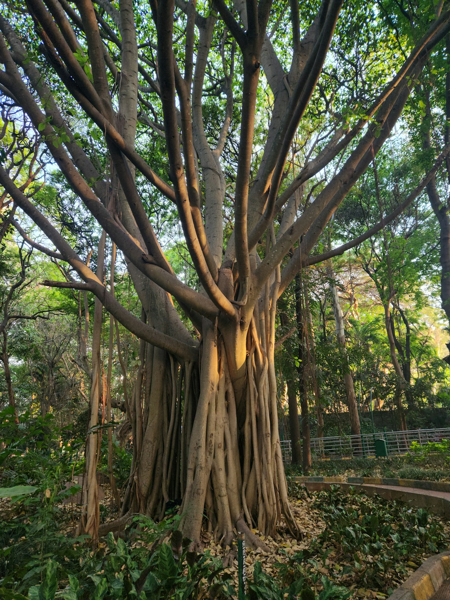

Workplace Advisory
One tree. Five roots. Every workplace challenge, held.
Labour law, POSH compliance, HR strategy, legal support, and employee wellbeing — five disciplines, rooted in one integrated practice.
Get in TouchIntegrated by design
Why Samagra
Samagra means whole. Most firms split labour law, HR, training, and wellbeing across vendors who never talk to each other. We put five specialists under one roof instead — so when one issue touches all four, the right person's already in the room.
Why Teams Choose Us
- One Team Five disciplines, one point of contact.
- Real Regulatory Depth Built on decades inside India's own labour service.
- Legal, Start to Finish From policy to litigation, covered end-to-end.
- HR That Works Practical advice from people who've run the shop floor.
- Wellbeing Included Mental health support built in, not bolted on.
- Built to Scale Compliance first, capability next, culture that lasts.
Our identity
One Tree, Five Roots
Our emblem is a banyan tree. Its aerial roots are unique — each one draws nourishment on its own, yet all of them hold up the same canopy. That's Samagra: five independent experts, one shared purpose.
A POSH case turns into a labour law question. A labour dispute reveals an HR gap. We built the firm so the right expert is already in the room when that happens — not a phone call away.

Five practices, one team
What We Do
Statutory compliance under the new Labour Codes, industrial relations counsel, and CAT/High Court representation.
ICC constitution and training, External Member services, fair and legally defensible inquiry conduct, and annual compliance reporting support.
Leadership development, culture and change management, talent and succession planning, and employee engagement strategy.
ICC and manager training, union workshops, and supervisory development for stronger shopfloor leadership.
Counselling embedded into POSH and HR cases, plus broader work-life balance and coping-skills support.
Built ground-up
How We Work
A ground-up progression, not parallel workstreams — each layer depends on the one before it.
Foundation
Compliance, labour relations, and business discipline — the conditions every other layer depends on. Most workplace issues trace back to gaps here.
Build
Once the fundamentals hold, focus shifts to HR and people practices — capability building, succession planning, first-time-manager development, and employee wellbeing.
Culture
Organisational systems that serve the company's vision and purpose. When the foundation holds and people practices are solid, strategy is far more likely to succeed.
One canopy · five roots
Meet the team
Each an independent expert who could stand alone — all anchored to one shared purpose. Tap anyone to read their background.
Get in touch
Tell us what you're facing
A compliance question, a POSH case, an HR knot to untangle — send it over and the right expert gets back to you.
- Email hello@samagraworkplaceadvisory.com
- Office Borivali (West), Mumbai — 400092
Thanks — your message is on its way. We'll be in touch shortly.
That didn't send. Email us directly at hello@samagraworkplaceadvisory.com and we'll pick it up.